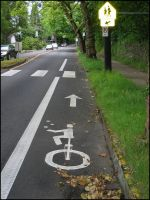
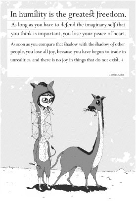

Skip ahead to:
Editorial
We’re back, in bold and black.
We figured that if we couldn’t break the grey, we could at least tame it. It’s zebras and chessboards this time.
Anyway, this issue’s theme is Home, so do try to spot the homely themes: being local, trying to be content where we are, and wisely using what we have. Along with that, we’ve got a great local food column, a good selection of more general life-and-culture pieces, and even a crossword page.
Please forgive the delay in getting this issue out. There’s only so much time in a day, and we just decided it’s better to aim for quality rather than getting it out quick. It should be excellent Christmas reading.
Our website is also falling behind a little. We’re hoping to do a bit of a revamp shortly: we’ll put all of Issue 1 online along with a handful of the Issue 2 articles.
Special thanks go to Gerry Leibbrandt from Prime Photography, who supplied many high-quality photos for this issue. And the neat back cover is by Peter van Leeuwen.
Have a read, and share it around when you’re done!
Contributors
- Hettie Arends
- Matthew Baird
- Anna Bartlett
- Janette Bartlett
- Matthew Bartlett
- Hayden Bosgra
- Derek Cressy
- Othniel Cressy
- Daniel Flinn
- Richie Flinn
- Heidi Hendrikse
- David Holtslag
- Bryan Hoyt
- Franci Hoyt
- Liana Hoyt
- Gerry Leibbrandt
- Jonathan M.
- Anna Mulholland
- Andrea Munroe
- SpiralShannon (flickr)
- Tim Sterne
- Aaron Stewart
- Peter van Leeuwen